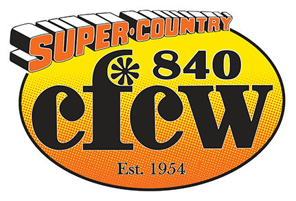
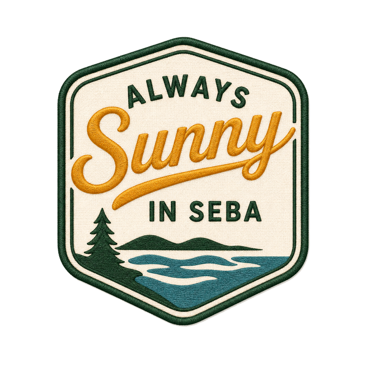
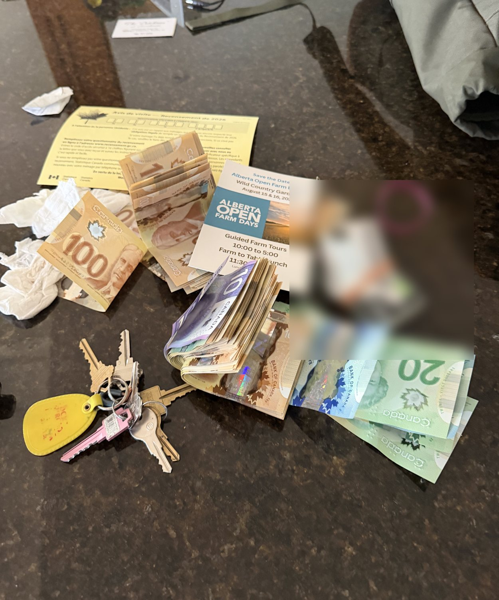

Official Radio Partner · prize & hunt updates every Friday on 840 AM
Real. Lost. Yours if ye find it. · Seba Beach, Alberta
Ye keep the $5,000 — and both diamond rings.
Tim drove all ten Seba Beach properties in his side-by-side. Somewhere along the way — the back trails, the cliff edge, the new beach — his ID, $5,000 in hundred-dollar bills, and two diamond rings slipped away into the woods. Find them, and everything but the ID is yours. He just wants his ID back. That's it. That's the whole deal.
🔥 Not found quickly? The pot may rise to $10,000. Tick tock, mateys.
No riddles to buy, no entry fee, no catch. Three things are lost out there. Two of them are yours to keep.
About five grand in hundred-dollar bills (with some 20s and 5s riding along) — it was earmarked to pay Randy's crew, and now it's earmarked for you. Keep every dollar.
Two diamond rings in a teeny little baggie — pawn-shop finds, a couple of diamonds each, meant to be gifts someday. Consider them gifted. Keep 'em both.
Tim's government ID, wrapped in an elastic band. It's his identity, and it's the only thing he's asking for. Drop it at SebaHub (162 Second Ave) or mail it in. No questions asked.
🏴☠️ Is this for real? Aye — dead serious. Scroll down for the last photo of the loot, then read the interview where Tim retraces every stop. The clues are in his answers.
📻 Hunt updates Friday mornings on 840 CFCW — tune in to hear if the pot climbs to $10,000.
Taken on tour day — Tim photographed the cash to text Randy: "I have the cash, where do you want me to leave it?" Hours later, all of it was gone.

Except this time it's not a legend. It actually happened. Classic Tim.
Gather 'round, ye barnacle-brained beach bums. Tim set out on a regular day of rounds — him, Ian, Casey, and Bob the entrepreneur, four souls in a side-by-side, touring all ten Seba Beach properties. Coffee at the school. Randy's freshly opened beach. Then the back trails — two, three kilometres of twisting, bouncing, tree-dodging glory that ye're technically not supposed to take a side-by-side through. (He did anyway. For Bob.)
In his pocket: his ID wrapped in an elastic band, about $5,000 in cash for Randy's crew, and two diamond rings in a teeny baggie. They rode along past the log cabin, down the secret road, out to the cliff edge at the Vista Lounge — where Tim stood eighty feet down a narrow path, gesturing at the lake like a man who owns a view — through the deep sand of the brand-new pavilion beach, past the museum, and back to the school.
He reached for his pocket. Gone. All of it. He backtracked every stop and found nothing but tire tracks and regret.
So here's the deal he's making with the whole of Alberta: find it, keep the cash and the rings. He'd just like his ID back — drop it at SebaHub, 162 Second Avenue, no questions asked. And if it doesn't turn up quickly? The pot may climb to $10,000.
— As told to the crew at 840 CFCW 📻
The lay of the land: the four home-base properties, the village landmarks, and where to park. The stop-by-stop trail map lives on the Route page.
🅿️ Park only in designated areas: the SebaHub school lot and the Kokanee Springs lot (by the RV Pub & Grill at the main entrance). And no — the wallet is not pinned on this map. That'd be a short hunt.
Four real neighbours on the Seba Beach shoreline — the folks behind the hunt. Get to know 'em while ye search.
There be real money in real woods, so there be real rules. Break 'em and ye be disqualified — and worse, ye be rude.
The forest stays standin'. Ye cannot chainsaw yer way to riches. The wallet fell — it is not inside a tree.
Not one. No burnin' the brush to "smoke it out." We will find you, and so will the fire marshal.
It fell out of a pocket, ye keeners — nothing is buried. Leave the shovels and the range alone.
Aye, someone asked. This is a hunt, not a demolition derby. Use yer eyes, yer boots, and yer wits.
Stick to the marked lots. Respect the neighbours, the fences, the guests, and the folks who live here.
Pack out yer trash, bring a friend, and share the fun. That's the pirate code. Arrr.
No treasure-huntin' license required. The hunt is live right now.
Start with the interview — Tim's answers contain the clues. Then study the route: 150 GPS-tagged photos across 10 stops.
The hot zones: Randy's beach (last confirmed sighting), the back trails, the cliff edge, and the deep-sand pavilion beach. Prioritize like a pro.
Roll out to Seba Beach, park in a designated lot, and hunt 9 AM–8 PM daily. Bring a friend — two sets of eyes beat one.
Keep the cash. Keep the rings. Call or text Tim or Casey (numbers below) and return the ID at SebaHub — 162 Second Ave. Become a Seba Beach legend.
🧭 First Mate's Corner: bring the wee ones, mind yer step by the water and the cliff edge, pack sunscreen and bug spray, and leave every spot nicer than ye found it. Arrr-esponsible pirates only.
These are personal cell numbers — please treat them with the respect ye'd want for yer own. Found the ID, the cash, the rings, or even a golf ball? Call or text. We're happy to hear from ye.
🏠 ID drop-off: SebaHub — 162 Second Avenue, Seba Beach, Alberta. No questions asked. Or mail it in. Tim just wants his identity back, sort of thing.
While ye're out there searching for Tim's ID, keep yer eyes peeled for golf balls hidden across the properties. Find one and ye win trips and tickets to the "In the Woods" Music Festival at Seba Beach. The hunt has layers — come out and see what ye find.
Real place, real photos. This is what ye're searching — and it's worth the drive even if ye come home with nothin' but sand in yer boots.
The first-ever Seba Beach Treasure Hunt. If it lands, we do it again — bigger every year.
One lost wallet. Five grand. Two diamond rings. A whole village on the map. This first year is about showin' the province that a little Alberta lake town can throw the best treasure hunt around.
More sponsors, more spots, a fatter prize — and maybe a neighbouring town or two across Parkland County joinin' the fun.
A hunt that hops town to town across Central Alberta, with CFCW callin' the play-by-play. (This year Tim "lost" a wallet and two rings — next year, who knows what the man'll misplace.)
💛 At the bottom of it all, this be real money for a real person who could use a win. Every dollar out there is a dollar of hope for whoever finds it.
Every sponsor dollar goes straight into the prize — and puts your brand in front of hunters, CFCW's Central Alberta audience, and the whole Seba Beach community.
840 CFCW — Alberta's Country Legend, serving Central Alberta since 1954. Our founding sponsor and the voice of the hunt.
Logo on the site & ads · named on-air every Friday on CFCW · featured sponsor card · social shoutout
Logo on the site · named on CFCW · social feature
Logo on the site · thank-you mention on air
Donate goods, services, or experiences to the pot. Let's talk.
📣 Become a Sponsor Sponsor inquiries welcome through SebaHub.
The official rules. Boring, aye — but real, because the money is real.
Plain-language rules of the hunt — may be updated as the hunt evolves.